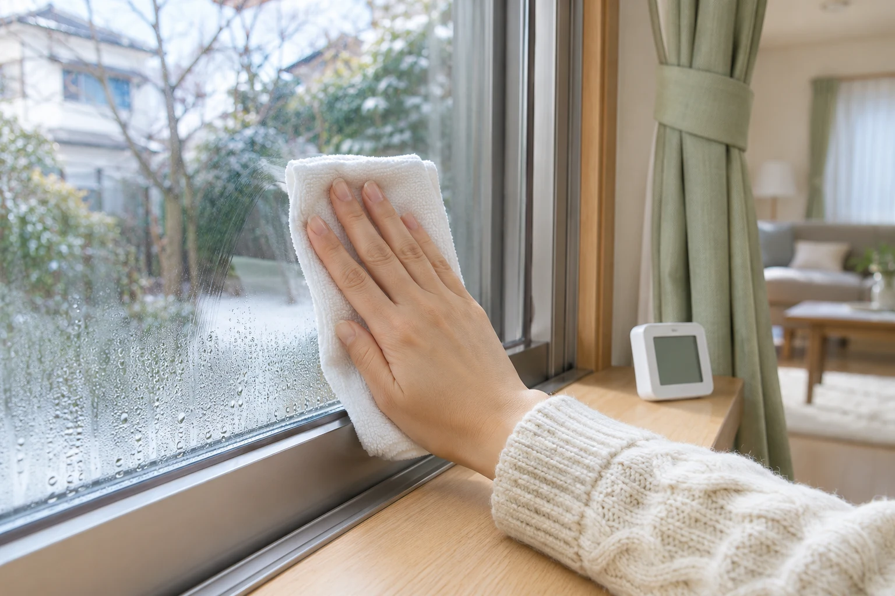
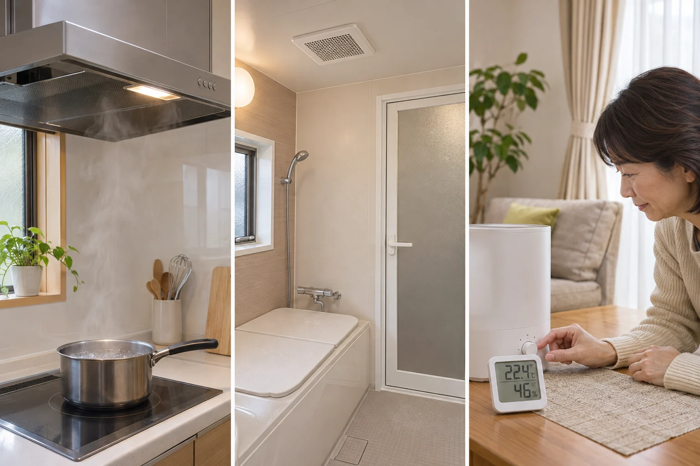
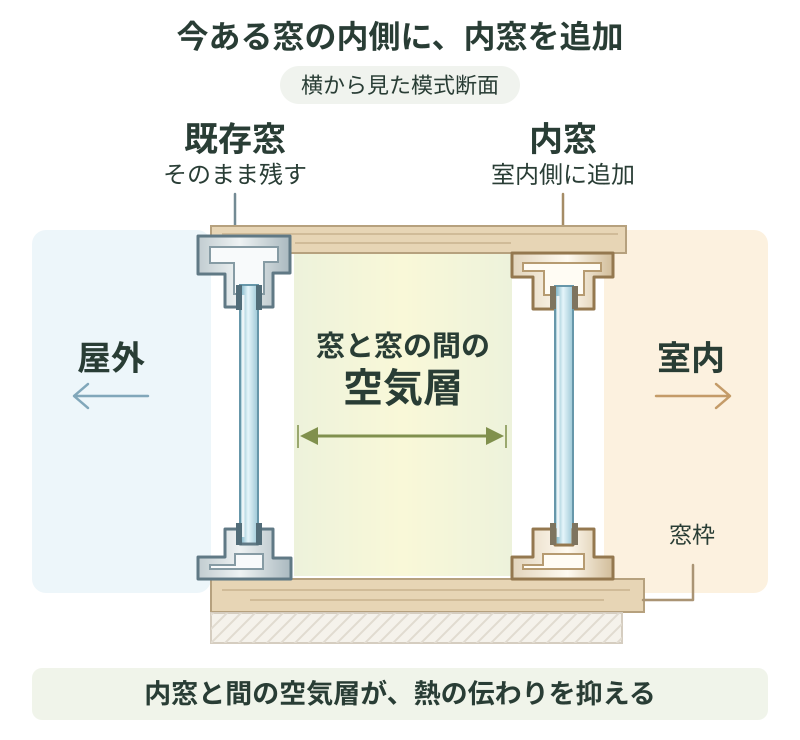
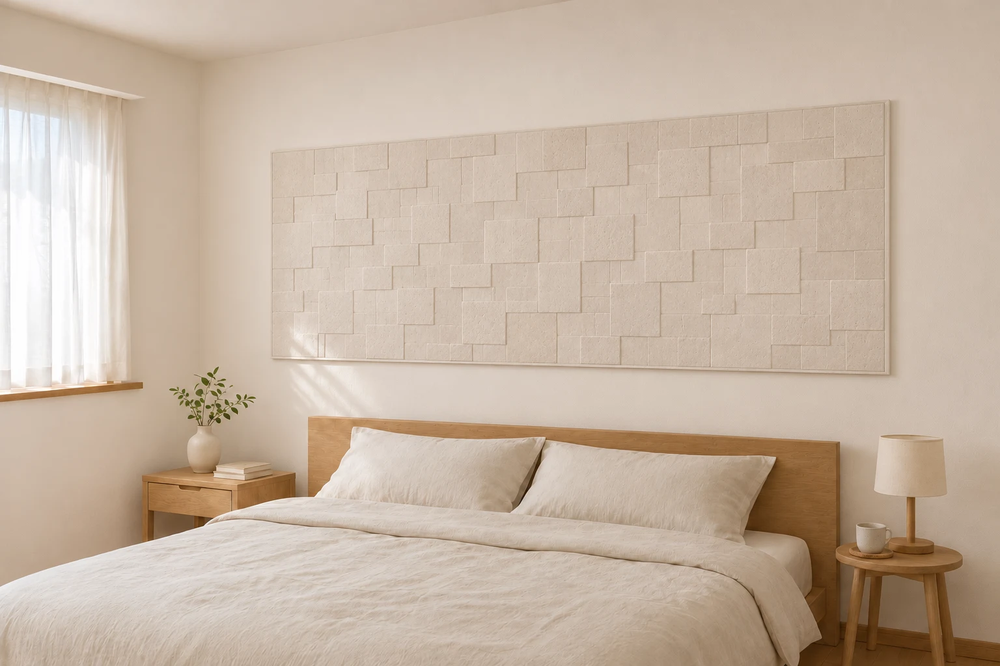

朝の支度の前に、窓ガラスを拭いて、サッシの溝も拭く。翌朝にはまた水滴が付き、ゴムの黒ずみや窓台の傷みまで気になってくる。冬になると続くこの手間、少しでも減らしたいですよね。
対策には、換気や加湿の見直し、除湿機、内窓など、いくつかの方法があります。この記事では、毎朝の窓拭きを減らすために、どの方法から試すかを整理します。窓の冷たさも気になる家で、私が内窓をすすめたい理由と、費用の確かめ方もお伝えします。
毎朝の拭き取りを少し楽に。今日できる工夫と、内窓をすすめたい理由
公開日：
 文｜エイスケ（住宅と教育の専門家）
文｜エイスケ（住宅と教育の専門家）

朝の支度の前に、窓ガラスを拭いて、サッシの溝も拭く。翌朝にはまた水滴が付き、ゴムの黒ずみや窓台の傷みまで気になってくる。冬になると続くこの手間、少しでも減らしたいですよね。
対策には、換気や加湿の見直し、除湿機、内窓など、いくつかの方法があります。この記事では、毎朝の窓拭きを減らすために、どの方法から試すかを整理します。窓の冷たさも気になる家で、私が内窓をすすめたい理由と、費用の確かめ方もお伝えします。
結露した水をそのままにしておくと、窓枠やカーテンのカビ、窓台や壁紙の傷みにつながることがあります。気になる水滴は拭き取りながら、そもそも水滴が付きにくい状態をつくっていきましょう。

水滴ができるのは、部屋の水蒸気が冷たい窓に触れ、冷やされるためです。冷たいグラスが汗をかくのと同じ仕組み。対策も、室内の湿気を減らすことと、窓を冷えにくくすることの二つに分けると選びやすくなります。
| 対策 | こんなときに・選ぶときの目安 |
|---|---|
| 換気・加湿の見直し | 部屋干しや加湿器の使用後に水滴が増えるなら、まずここから。今ある設備の使い方を変えて試せます。 |
| 除湿機 | 室内干しなどで湿気が多いときの選択肢。購入費に加え、電気代や排水の手間、冬の低温時に使える機種かも確認します。 |
| 内窓 | 湿気対策をしても窓が濡れ、窓際の寒さも気になる家に。窓の断熱性を高め、結露と冷えの両方に働きかけます。 |
| 調湿壁材 | 湿度の変化をやわらげる補助的な方法。内装も替える予定なら候補に。窓の断熱や換気と組み合わせて考えます。 |
水滴だけなら、まずは洗剤を使わずに取り除きます。砂やほこりがあれば先に取り除き、砂の付いた布でこすらないようにします。窓の近くに結露取りワイパーと柔らかいクロスを一組で用意しておくと、毎朝取りかかりやすくなります。
ガラス、枠、ゴムパッキンでは使える洗剤が異なります。パッキンの黒ずみが残るときは、窓の説明書を確認し、メーカーや施工店へ相談を。浴室用のカビ取り剤を窓に自己判断で流用しないでください。アルミなどを傷める薬品があり、窓メーカーも塩素系薬品などの使用に注意を示しています。
価格・取扱いは2026年11月10日時点。店舗や地域の在庫は異なります。
まずは今夜、いつ、どこで水分が増えているかを見てみませんか。調理、入浴、部屋干し、加湿器。水分が多く出るところで換気すると、湿気を部屋へ広げにくくできます。

窓を開けて換気するときは、2か所を開けて空気の通り道を。1回10分程度を目安に、寒さや部屋の状況に合わせます。排気を室内に出す開放型の石油ストーブやガスファンヒーターは、室内の水蒸気を増やします。説明書に沿って換気しましょう。
朝の外気温によっても水滴の量は変わります。数回の様子を見比べ、窓枠やカーテンまで濡れる状態が続くなら、その写真を施工者に見てもらいましょう。
湿気の出し方や換気を見直しても、同じ窓が毎朝濡れる。窓の近くではひんやりして落ち着かない。そんな家で窓の工事を考えるなら、私は内窓が、費用に対する効果を期待しやすい選択肢だと思っています。
理由は、今ある窓を生かして1か所から検討でき、窓拭きの負担と窓際の寒さを一緒に減らすことが期待できるからです。内窓は、既存の窓の室内側に、もう一つ窓を取り付ける方法。二つの窓の間に空気層ができ、内窓とともに室内の熱を外へ伝えにくくします。

たとえば、幅90cm・高さ60cmの引違い窓に、Low-E複層ガラスの内窓を付ける工事は、税込8万7,800円・設置工事費込みという販売例があります。Low-E複層ガラスは、特殊な膜で熱の伝わりを抑えるガラスです。
これは特定の寸法・仕様の掲載価格例です。実際の費用は窓の大きさ、ガラスの仕様、取付け部材や現場条件で変わります。まずは困っている窓1か所の見積もりを取り、毎朝の拭き取りの手間や、そこで過ごす寒さがどれくらい変わりそうかを聞いてみましょう。
窓際に座るたび寒い寝室やリビングなら、結露の軽減に加えて、そこで過ごす快適さにも費用をかける意味があります。暖房費の変化は住まいや使い方で違うので、回収年数だけで決めず、減らしたい困りごとと見積額を比べたいところです。
内窓は、今あるカビや傷んだ窓台を直す工事とは別です。すでに黒ずみ、木部の変色、壁紙の剥がれがあれば、清掃や補修が必要かも一緒に見てもらいましょう。
相談する窓を選ぶなら、毎朝いちばん拭くのが大変な窓か、長く過ごす部屋の寒い窓から。施工者には、こんなふうに伝えると話が具体的になります。
「この窓を毎朝拭くのが大変です。まずこの1か所に内窓を付ける場合の費用と、どこまで改善が期待できるかを知りたいです」
見に来てもらう時間には窓が乾いていることもあります。窓と部屋全体を撮り、黒ずみや傷みがあれば、その部分も残しておくと普段の様子が伝わります。
ガラス、枠、窓台のどこまで濡れるかが分かる写真。
ゴムの黒ずみ、木部の変色、壁紙の剥がれを近くから。
窓と家具、暖房、加湿器、部屋干しの位置が分かる写真。
困る時間帯、室温・湿度、試した対策、予算。
見積書では、窓の寸法・ガラス仕様・取付け部材・工事費の内訳と、追加費用が出る条件を確認。補助制度を使う場合は、対象製品と申請条件、補助前の工事総額、補助後の自己負担額を分けて確かめます。マンションなら管理規約や申請の要否も確認しましょう。
こうした場合は、雨漏りや配管など別の原因も考えられます。濡れた日時と場所を撮影し、原因の確認から依頼しましょう。
見積もりでは「この窓をどう使うか」まで伝えると、工事後の暮らしに合う提案を受けやすくなります。
内装も整えたいなら、調湿壁材も選択肢です。湿度が高いときに湿気を吸い、低いときに放出する働きがあります。ベッドの背面などに部分的に貼れば、絵を飾るようなアクセントにも。私が魅力に感じるのは、床に物を増やさず、機能とインテリアを一緒に考えられることです。
北側の寝室などで湿気が気になる場合も、まず窓や壁の冷え、換気の状態を確かめたうえで、貼る場所と必要な面積を相談しましょう。効果は製品や部屋の条件で変わり、調湿壁材だけで結露がなくなるわけではありません。すでに壁が濡れている場合は、原因の確認と補修が先です。

「毎朝いちばん拭くのが大変なのは、どの窓？」「窓際の寒さも気になるのは、どの部屋？」
まず1か所に絞って写真を撮り、試せる湿気対策と工事の予算を話してみましょう。
内窓、複層ガラス・断熱サッシ、24時間換気設備(給気口・排気口・フィルター)、壁・天井・床の断熱、調湿壁材(調湿タイル・調湿パネルなど)、温湿度計
窓のリフォーム・機能を確かめる ↗空気環境の機能を確かめる ↗関連記事
この記事を書いた人｜エイスケ
1986年生まれ。実家の工務店・不動産に10年間従事したのち、教育の世界へ。住宅と教育、両方の視点から「豊かな暮らし」をテーマに執筆します。※本コラムは筆者個人の見解・経験に基づくものです。最終的な判断は各分野の専門家にご相談ください。